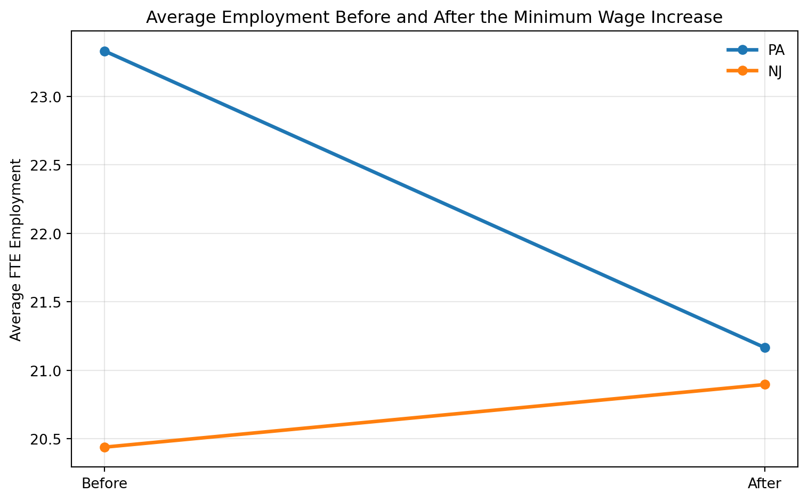

| NJ Before | PA Before | NJ After | PA After | NJ Wage Before | PA Wage Before | NJ Wage After | PA Wage After | |
|---|---|---|---|---|---|---|---|---|
| 0 | 20.439 | 23.331 | 20.896 | 21.166 | 4.612 | 4.63 | 5.081 | 4.617 |
Replication of Card and Krueger (1994)
Minimum Wages and Employment: A Case Study of the Fast-Food Industry in New Jersey and Pennsylvania
Introduction
In April 1992, New Jersey increased its minimum wage from $4.25 to $5.05 per hour. Card and Krueger (1994) examined whether this policy reduced employment in the fast-food industry. Their study became one of the most influential empirical papers in labor economics because it challenged the traditional prediction that higher minimum wages necessarily reduce employment.
The authors compared fast-food restaurants in New Jersey to similar restaurants in eastern Pennsylvania, where the minimum wage did not change. This creates a natural difference-in-differences (DID) research design, where Pennsylvania serves as the control group and New Jersey serves as the treated group.
The goal of this replication is to reproduce the paper’s main employment result using the publicly available dataset.
Main Analysis
Data Preparation
Following the original paper, full-time equivalent employment (FTE) is defined as:
FTE=Full-time workers+Managers+0.5×Part-time workers
This measure converts part-time workers into half of a full-time worker.
Replication of Summary Statistics
The summary statistics closely match the original paper. Average starting wages rose sharply in New Jersey after the policy change, while wages in Pennsylvania remained relatively stable.
Difference-in-Differences Estimate
| Group | Before | After | Change | |
|---|---|---|---|---|
| 0 | New Jersey | 20.439 | 20.896 | 0.457 |
| 1 | Pennsylvania | 23.331 | 21.166 | -2.166 |
Difference-in-Differences Estimate: 2.623Employment in New Jersey increased slightly, while employment in Pennsylvania declined. The DID estimate is positive, indicating that employment growth in New Jersey exceeded that of Pennsylvania after the minimum wage increase.
This result is consistent with Card and Krueger’s main conclusion: there is no evidence that the minimum wage increase reduced employment.
Regression Replication (Table 4 Column i)
| Coefficient | Std. Error | P-value | Observations | |
|---|---|---|---|---|
| 0 | 2.646 | 1.161 | 0.023 | 386 |
The coefficient on the New Jersey indicator measures the relative employment change in New Jersey compared with Pennsylvania. The estimated coefficient is positive and statistically significant, closely matching the published paper.
Something Additional

The figure provides a clear visual interpretation of the difference-in-differences method. Pennsylvania experienced a notable decline in employment, while New Jersey employment remained stable or increased slightly. The treatment effect is captured by the difference in these changes rather than the initial difference in employment levels.
Conclusion
This replication broadly confirms the main findings of Card and Krueger (1994). Using the publicly available dataset, I find no evidence that the 1992 New Jersey minimum wage increase reduced fast-food employment. Instead, employment growth in New Jersey exceeded that of the control group in Pennsylvania.
These findings remain important in modern labor economics because they demonstrate that the employment effects of minimum wages may differ from the simple competitive model.
Because the analysis focuses on one industry and one regional policy change, the results may not generalize perfectly to all labor markets.